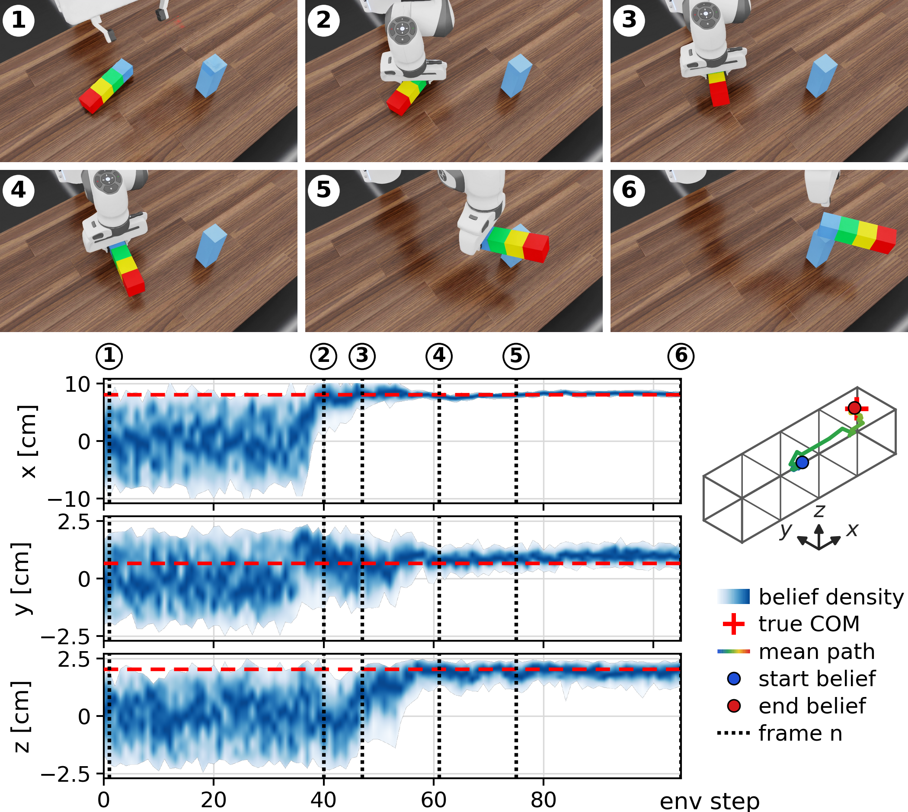
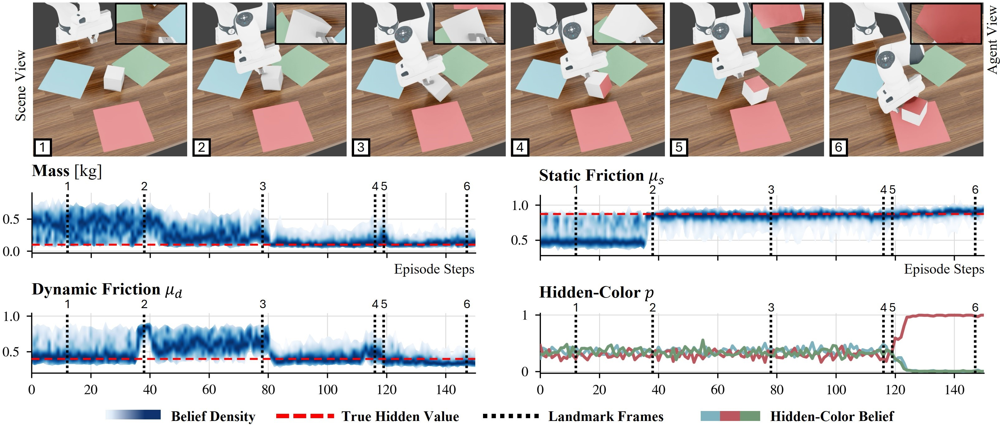
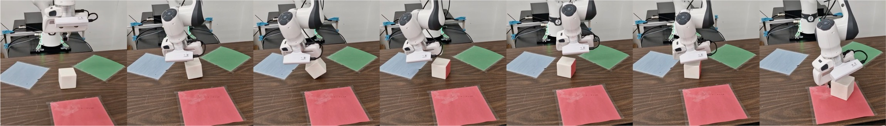

Simulator-supervised estimation
Privileged simulator state supervises a flow-matching posterior at every timestep. It is used as an estimation target and critic input, never as an actor input.
Simulator-Supervised Belief for Partially-Observed Manipulation
Under review at ICRA 2027
How can simulation efficiently teach a visuomotor policy to gather information? Hidden physical properties, such as mass and friction, substantially affect how a robot can optimally manipulate objects. A privileged teacher directly accesses these properties, so its actions generally do not demonstrate how to acquire missing information, creating a mismatch for a partially-observing learner, which does not observe the privileged state during training or deployment. We instead use a simulator to simultaneously supervise a learned approximation to the belief state and train a policy conditioned on that approximation by reinforcement learning. Our method, Simulator-Supervised Belief Flow (SSB-Flow), learns a sampleable posterior over task-relevant physical quantities from interaction history, using high-dimensional image input alongside proprioceptive input. The policy consumes an encoding of posterior samples, allowing it to use estimated uncertainty when selecting actions. We compare SSB-Flow to three student-teacher approaches originally designed to use privileged information, as well as a strong recurrent RL baseline. Across four challenging manipulation tasks, SSB-Flow achieves the highest success rate on every task, averaging 93.1% versus 64.7% for the strongest alternative, an absolute gap of 28.4%. These results support supervising physical-state inference as an effective use of privileged information for partially observed manipulation.
A recurrent encoder summarizes wrist-camera images, proprioception, and previous actions. A conditional flow-matching model, supervised by simulator state, samples from a posterior over task-relevant physical quantities. A permutation-invariant encoder maps the samples to features for the actor, which is trained by reinforcement learning and never receives privileged input.

Privileged simulator state supervises a flow-matching posterior at every timestep. It is used as an estimation target and critic input, never as an actor input.
A learned velocity field turns Gaussian noise into K posterior samples. The samples can stay multimodal while the interaction history is still ambiguous.
The actor sees a set encoding of the samples, so it can act on estimated uncertainty. It learns information-gathering behavior from task reward alone.
Three tasks (four variants) in which success depends on a hidden object property. The information the agent needs leaves no trace in the environment's persistent state, so passive observation cannot reveal it. Only the agent's own interaction history can.


| Task | Reward term | Description | Weight |
|---|---|---|---|
| Balance | — | Reward terms to be added | — |
| Sort-Mass / Sort-Friction | — | Reward terms to be added | — |
| Hidden-Color | — | Reward terms to be added | — |

| Method | Balance | Sort-Mass | Sort-Friction | Hidden-Color | Average |
|---|---|---|---|---|---|
| Privileged oracle | 95.9% | 100.0% | 100.0% | 100.0% | 99.0% |
| RMA | 47.7% | 48.2% | 48.6% | 20.5% | 41.3% |
| SITT | 17.9% | 32.7% | 33.4% | 34.4% | 29.6% |
| A2D | 9.8% | 85.8% | 56.8% | 0.3% | 38.2% |
| PPO-LSTM | 30.2% | 67.3% | 77.2% | 84.2% | 64.7% |
| SSB-Flow (ours) | 83.4% | 92.8% | 96.7% | 99.4% | 93.1% |


Hidden-Color on a Franka FR3 with an 8 cm white cube placed colored face down, so every trial requires a flip. The policy observes a 54 × 96 RGB image from a wrist-mounted camera, proprioception, and its previous action at 20 Hz.
